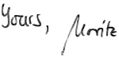
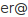

Hi there!
My name is Moritz Beller, B.Sc. I am a Computer Science student at Technical University of Munich in my third Master semester.
This is a website about me and what I do. Feel free to contact me.

28/1/2013 I am eager to do my Master's thesis abroad, preferably in the US. If you have the possibility to arrange something, please do get in touch with me.
28/1/2013 Launch of my personal website.
I am an absolute enthusiast in everything I do. In my studies, I focus on Software Engineering, and Software Quality more specifically. In my job as a student temp, I mainly work as a Java developer with Eclipse. I have a strong focus on writing maintainable, easy-to-understand source code. Being an ArchLinux user, I naturally like doing things in the shell.
To catch up with the latest trends in computer science, I am a regular attendee at major conferences. I really enjoy giving presentations myself. After finishing my Master, I want to continue as a PhD student.
I do not only study pure Computer Science, but I have sports as my minor field of study.
In my leisure time, I enjoy doing sports. After seven years of competitive table tennis, I have lately developed a fascination with Olympic weight lifting. When I am not in the gym, I like the mountains a lot. In the winter for skiing, and in the summer for hiking and mountainbiking. From time to time, you will find me running around the English Garden in Munich.
Having a classicist's background from school, I like language and speaking in general. Thus, I always try to improve my language, be it for scientific writing or just for fun. From my abroad studies in Sweden, I have a particular interest in Swedish culture.
Education |
|
| 10/2011–today | M.Sc. Computer Science, Technische Universität München, Germany. |
| 8/2010–3/2011 | Erasmus Abroad Studies, Linköpings Universitet, Sweden. |
| 9/2008–9/2011 | B.Sc. Computer Science, Technische Universität München, 2.0. |
| 9/1999–6/2008 | University-Entrance Diploma, Celtis-Gymnasium, Schweinfurt, 1.7. |
Experience |
|
| 10/2011–today | Student Temp, CQSE GmbH, München. Software Engineer and Consultant |
| 1/2011–3/2011 | Student Temp, Sick IVP A/B, Linköping, Sweden. Research & Development, Team “Vision” |
| 2/2009–9/2009 | Student Researcher, Chair for Software and Systems Engineering, TU Munich. |
| 7/2007–8/2007 | Trainee, SICK AG, Waldkirch. Central Department Research & Development |
Interests |
|
| Languages | German (native), English (fluent), Swedish (intermediate), Latin, Greek. |
| Hobbies | Olympic weightlifting, Skiing, Reading and Writing, Travelling. |
Extra-curricular Activities |
|
| Journalism | Author for “unikat”, Munich’s student magazine (since 2010) |
| “OOP 2013” | Student volunteer and attendee at the symposium “OOP 2013” in Munich, where “Software meets Business.” |
| Cross-cultural Trainings | Student evaluator of the Deutscher Akademischer Austauschdienst (DAAD) for “eu-community.eu” in Brussels and Bonn, 2011 Speaker at the TUM Career Service’s event “Go Sweden” in Munich, 2011 |
| “BWM 2007” | German national contest for maths: 1st price |
| “BWInf 2006” | German national contest for computer science: 2nd price |
| “BWInf 2004” | 1st price, fifthbest result nation-wide |
| “BWInf 2003” | 2nd price in first round, 2nd price in second round; 2nd best competitor at the age of 15 |
| “Invent a Chip 2005” | Contest organized by the “German Association for Electrical, Electronic and Information Technolo- gies” (VDE): 3rd place for the design and implementation of an AES-based encryption adapter as a silicon chip |
| “Jugend forscht 2005” | German contest for young scientists: Winner of regional contest with “x-View – development of a technically advanced video beamer”; 3rd place at Bavarian contest, special price for “Radio and video technology” |
The best and easiest way to get in touch with me is to write me an email: bellin.tum.de (that is, <my_surname>@in.tum.de).